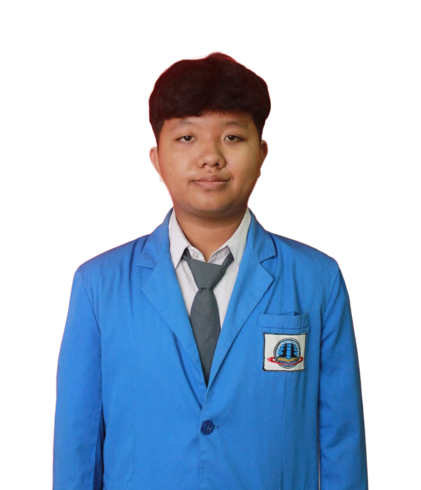

Institut Teknologi & Bisnis STIKOM Bali
240010003
Jelajahi dokumentasi proyek praktikum dan tugas modul kuliah saya.
Daftar praktikum, laporan laboratorium, dan proyek sistem yang telah diselesaikan.
Coba gunakan kata kunci pencarian lain atau ganti kategori filter di atas.